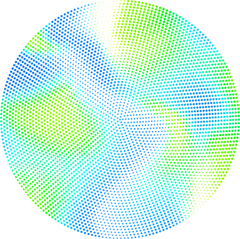

We combine industrial carbon, hydrogen, chemistry, and engineered microorganisms in a continuous process that converts simple molecules into fermentation-grade feedstock.

The industry has spent a decade optimising microbes.
The next decade will be about optimising the inputs that feed them.
A single platform for programmable sugars, from commodity volumes to the specialty, niche, and rare sugars that are hard to source any other way. We convert abundant inputs into feedstock for biomanufacturing.
Whether you sell the energy, ferment the sugar, or formulate the product, Solarferm fits into what you already do.
We optimise chemical feedstock synthesis for biological sugar production, using the most efficient energy sources, gas and liquid feedstocks, no crops, no solid feedstocks, no harsh pretreatment.
Carbon dioxide provides the carbon backbone for every molecule we build.
Industrial energy provides the driving force that powers the conversion.
Engineered chemistry does the heavy lifting to form the feedstocks.
Engineered microorganisms assemble complexity efficiently into sugar.
Beneath the simplicity is serious engineering. Solarferm combines proven thermocatalytic processes with advanced electrochemical bioreactor technology, developed with leading research institutions, into a single continuous production loop, transforming energy into programmable sugars ready to power the next generation of biomanufacturing.
Built on industrial inputs and infrastructure already deployed at global scale.
No cropland, harvest cycles, climate risks, or agricultural supply chains.
Production measured in days, bankable long-term supply contracts.
Deployable alongside existing energy, carbon, and manufacturing assets.
Outputs integrate with existing fermentation and downstream systems.
Modular facilities add capacity incrementally where demand exists.
However you use it, Solarferm gives you a supply chain that does not depend on farms, weather, or distant commodity markets.
Modular plants sited where you need them, not where the crops grow.
Pricing and supply insulated from agricultural commodity volatility.
A smaller footprint than crop-derived sugar, by construction.
Solarferm brings together deep science, hard engineering, and industrial know-how, the people who can take a process from the lab to the plant. We work with world-class partners, and we are growing, with more to share soon.
Supported by leading research and industry programmes across New Zealand, Australia, and the United States.
Tell us what you make and how much sugar or carbon it takes. We'll show you where Solarferm fits.
Talk to us about feedstock